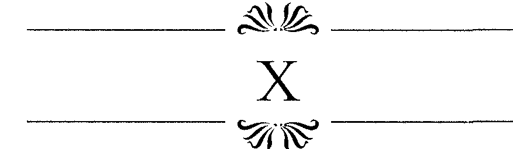
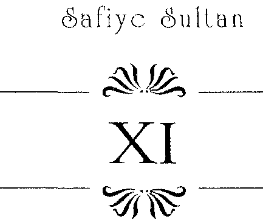
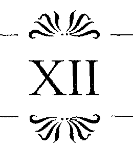
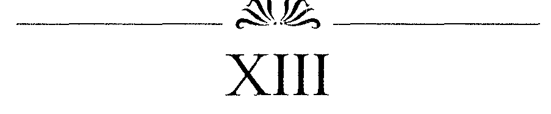
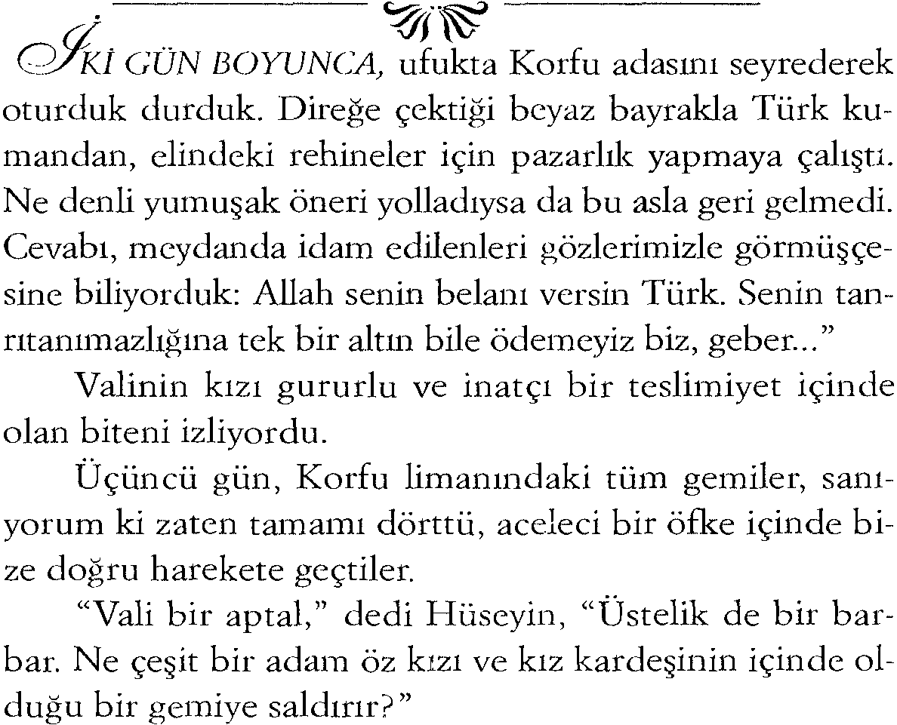
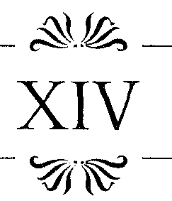
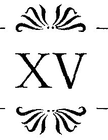
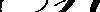
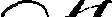
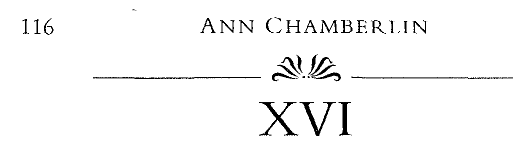

ÎKKAAT' Bu ses beni ve amcamı telaşla dışarı fırlatmıştı. Ve etrafa bakar bakmaz onu gördük. Gecenin karanlığında bir yıldız sanarak üzerinde durmadığımız ışıktı bu. Şafağın aydınlığında, bayrağını görebileceğimiz yakınlıktaydı artık. Kapkara zeminde bir beyaz Malta haçı. Aziz Jan'ın Malta Şövalyeleri.
Ellerini çırparak Tanrısal bir sevinç gösterisi içinde olan rahibe, "Tanrı'ya şükürler olsun," dedi. "Onların korsan olmasından ödüm kopmuştu."
Başımı sallayışım ve cevap yerine çıkardığım homurtudaki endişeyi yakalamış olacaktı ki, "Herhalde dost insanlardır" diye devam etti, "Hıristiyan bayrağı taşıyorlar. "
"Yine de bize yanaşıp, ortalığı arayacaklardır," diye cevap verdim.
"Ama neyi?"
"Onlar Türk ararlar." Ö n ü m d e sallanan kapıya bastım tekmeyi.
"O zaman sorun yok. O musibet Türkler'den kimse yok bu gemide, öyle değil mi?>?
Bana baktı.
"Tabii ki yok" dedim çabucak. "Ama bu bizi yavaşlatacak. Korfu'ya ulaşmamız iki gün daha gecikebilir."
Kırık dökük görüntülü ama ağzına kadar silahlanmış gemi bize bordaladığında rahibe ve yeğeni güvertede dizlerinin üzerine çökmüş, ateşli bir şekilde dua ediyorlardı. Eğer ben bir Sen Jan şövalyesi olsaydım bu manzara bana gerçek olamayacak kadar dindar görünürdü ve Türk kokusunu hemen alırdım. Ama herhalde yaşlı kadı-
Safiye Sultan 75
onun taklit edilmez tavrının etkisinden olacak hızla geçip gittiler. Ve yine herhalde sinyorinanın saçlarının altın pa-rıltısiyla bundan vazgeçtiler. Kaptanlarının onun bukleleri arasında parmağını gezdirdiğini gördüm, neyse ki ortalıkta bulabilecekleri bir Türk yoktu. Öfkeyle yanıyordum, ama bunun nedeni o dokunuştan çok, kızın ona cevap veren bakışları ve gülümsemesiydi.
Şövalyelerin kaptanı zayıf biriydi. Omzuna dökülen kahverengi saçları ıslak keten gibi yumuşaktı. Zırhlarının üzerine o geleneksel korumalarını da giymiş olan mürettebat içinde bir çift tabancayla donanmış olarak yalnızca o vardı. Göğüs göğüse, ya da kılıçla onun hakkından kesinlikle gelebilirdim. Allah ona ne zekâ, ne de kuvvet vermişti. Ama, muhtemelen çalıntı silahlarla talih ondan yana dönmüş görünüyordu ve önünde kurt karşısındaki kuzular gibi diz çökmemiz gerekiyordu.
Tüm bir sabah süren araştırmadan sonra şövalyeler şüpheli bir şey bulamadılar ve tarafımızdan davet edildikleri akşam yemeğine memnuniyetle katıldılar. Ahçı, şarapla terbiyelenmiş tuzlu domuz, kızarmış elma ve bisküvi hazırlamıştı. Deniz tutmasından yeşermiş suratıyla daha bir dindar görünen rahibe ve saygın bir Hıristiyan kılığındaki Hüseyin de dahil olmak üzere herkes sofrada yerini almıştı.
Artık biraz rahatlayıp Türkler'den arındırılmış bir denizin şerefine kadeh kaldırabilirdim. Ayaklarımı uzatıp, arkama yaslanarak, bir gece önceki uyku kaçıran çürük ruhun etkisinden kurtulabilirdim. Yemek ve içkiler mükemmeldi, güneş sıcaktı ama taptaze bir meltem vardı esen. Gökyüzü mükemmel bir mavilikte, deniz parlatılmış bir ayna misali ışıldamakta... Boş direklerin arasında evindeymiş gibi dolanan martılar...
Ama heyhat, bu rahatlık devam edemezdi. Ensemde 7 6 A N N C H A M B E R L I N
hissettiğim bir tokat kadar etkileyici bakışlarla arkama döndüm ve onun gözlerini gördüm, benim huzurumla delice bir kıskançlığa tutulmuş gözler... Bu ihtiraslı, kısılmış kahverengi gözler diyordu ki, Şimdi görürsün... Bu sözleri yüksek sözle söylenmişçesine duyuyordum.. Göz göze gelince bakışlarını çevirdi, ama mesajın ulaşması için yeterli zaman geçmişti. Benimle adil bir oyun oynamak ister gibiydi, gelen tehlikeyi sanki haber veriyordu.
Ya bu nedenle, ya da kazanacağı zaferden emin olmanın verdiği pervasızlıkla hiç çekinmemişti bunu yapmaktan.
Dikkatimi çektiğinden emin olunca, Baffo'nun kızı yerinden kalkıp halasının yanına gitti. Burası tam da şövalyelerin sıska kaptanının dirseğinin dibiydi.
Kız, "Sayın Şövalye" diye başladı .
"Evet M a d o n n a ? " Böyle hitap edilmekten biraz mahcup olan adam pür dikkat bakıyordu.
Madonna Baffo buz gibi soğuk ve beyaz görünüyordu. Devam etti, "Sayın Şövalye, neden Hıristiyan gemilerinde Türk arıyorsunuz? Zaten hiçbir iyi Hıristiyan onlarla ticaret yapmaz."
"Söyleyeceklerim sizin için bir sürpriz olacak herhalde bayan. Onlar fare gibidirler ve her gemide bulunabilirler."
Madonna Baffo şaşkın ama eğleniyormuş gibi bir ifadeyle sordu. " N e çeşit bir Hıristiyan bunu yapabilir ki?"
"Bir haini ilk bakışta anlayabilmek çok kolay değildir Madonna. Ama size şunu söyleyebilirim. Sizin Venedikliler en berbat işbirlikçilerdir. îspanyollar'dan da Fransızlardan da daha beterdir onlar."
"Buna inanamıyorum."
"Tanrı şahidimdir ki doğru söylüyorum."
"Ama niçin?"
Safiye Sultan 77
" Ç ü n k ü onlar parayı i s a ' d a n daha çok severler.
Onlar biz Kudüs'ü zapt ettiğimizden bu yana Türkler'in tarafında yer almışlardır. Yüce Kitap'ta söylendiği gibi onlar, içleri ölüm ve fesatla dolu mermer mezarlara benzerler."
"Ben buna inanamam, ben de bir Venedikli'yim."
"Ama siz saf ve temizsiniz bayan. Dünya pisliklerinden habersizsiniz. Böyle bir masumiyeti korumak bir erkeğe onur verir. Yaptığım işten övünç duyuyorum sizin karşınızda."
"Size bunun için minnettarım, Meryem Ana ve melekler sizinle olsun."
Ona aptal rolü yapıyordu. Bu adamın karşısında gerçekten de aptal rolü yapması gerekiyordu, ama başka şeylerden bile söz etseler bunun yine de çok tehlikeli bir oyun olduğunu biliyordum.
Yavaşça ayağa kalktım ve sönmekte olan ateşin ba
şında, domuzu ısıtmaya çalışan aşçıya doğru yürüdüm.
Maşayla, parıldayan bir kömürü tuttum. Salağımsı bir havada, gizli bir dikkatle dinlemeye devam ettim.
"Peki benim gibi cahil biri böyle biriyle karşılaştığını nasıl anlayabilir? Şimdi siz bana bu geminin temiz olduğunu söylüyorsunuz. Siz olmasanız ben bunu nasıl bilebilirdim? Gemide Türkler olduğunu sanabilirdim. Mesela, kaptanımız Sinyor Veniero'nun bir Türk dostu olmadığından nasıl emin olabilirdim?.. Gerçi kendisi zararsız biri, ama..."
"Kaptan Veniero sizde bir kuşku mu yaratıyor Madonna?"
"Yok canım bu sadece benim sersemliğim..."
"Belki de değildir" dedi şövalye, ciddi bir biçimde ilgilenmişti bu konuyla. "Asla kesin olarak bunu bilemezsiniz... Kaptan ne yaptı?"
7 8 A N N C H A M B E R L I N
"Aslında hiçbir şey. Ama işte şu iriyarı zenci köleleri... O n u istanbul'dan aldıklarını söylüyorlar. Bir Türk ve bir kâfir o, eminim. Benim Ödümü koparıyor. Bakın onu düşündüğümde bile tüylerim diken diken oluyor."
Tam o sırada bembeyaz tenini göstererek dantellerle süslü manşetini bileğine doğru sıvadı, sonra da sanki kazay-laymışcasına o nefis kolunu ortaya çıkarıverdi.
"O zenciye bakmanın bile dehşet verici olduğunu kabul ediyorum, evet. Özellikle de sizin gibi ince zevkleri olan biri için. Ama affınıza sığınarak söylüyorum ki Madonna, o bir hadımdır ve bir köledir ayrıca..."
izin verilir verilmez yelken açabilmek için direkler-deki ipleri gözden geçiren Piero'yla göz göze geldik.
Ona bir kutlama bakışı attım, doğrusu üstüne düşen bölümü iyi oynuyordu. Elimdeki maşayı çaktırmadan arkama götürdüm ve güvertedeki yerime yöneldim.
Şövalye ikna edici konuşmasını sürdürüyordu, "Ondan korkmanıza gerçekten gerek yok hanımefendi. Eminim ki kaptanınız onu vaftiz ettirip bir de uygun Hıristiyan adı vermiştir. Üstelik de onu bu denizlere getirerek zavallı devin ruhunu arındırıyor,"
Şövalyenin, P i e r o ' n u n kafasını uçurmaması Baffo'nun kızını çok şaşırtmıştı. Bu duygudan sıyrılır sıyrılmaz kendine yeni bir tatmin yolu aramanın peşine düştü.
"Kaptan Veniero konusunda haklılığınızı kabul ediyorum" dedi. "Sizin bu konulardaki deneyiminizin yanında benimkilerin lafı bile olmaz ve sizin değerlendirmenizi hiç kuşkusuz kabul ediyorum."
Şövalyenin bu kadar yağlanmaktan başı dönmüştü.
Saldırının tam zamanıydı.
"Ama yine de... Onun yeğeni genç Sinyor Veniero, ikinci kaptan meselesi... Bir gece onun yaptığı garip bir konuşmaya kulak vermek durumunda kaldım da..."
Safiye Sultan 79
"Bu konuşmayı kiminle yapıyordu?"
"Bay Battista ile, gemideki tüccar."
"Evet?"
"Yalnız ona Enrico diye değil de, Hüseyin diye hitap ediyordu."
Hüseyin?
"Evet, kulağıma öyle geldi. Daha önce hiç duymadı
ğım bir isimdi bu. Oysa onun vaftiz adının Enrico oldu
ğunu hepimiz biliyoruz. Sizce bu tuhaf değil mi?"
"Evet öyle" dedi şövalye, yalnız kızın dolambaçlı konuşmasından ötürü kuşkulu gibiydi.
"Ama o değil de..."
"Madonna Baffo," dedim. Bunu çarçabuk ama beni göz ardı edemeyeceği bir tonda söylemiştim "Tek bir kelime daha söylemeyin Madonna. Aksi takdirde hepimizin pişman olacağı bir şey yapmak zorunda kalacağım."
Şövalye, kız ve tüm diğerleri bana dönmüşlerdi.
Elimdeki korla topun ağzı arasında ancak kıl kadar bir aralık vardı ve top şövalyeye hedeflenmişti. Bu mesafeden yapılacak bir atış gemiyi rahatlıkla ikiye bölerdi.
Şövalyenin eli silahlarına gitti. "Onları yere at" dedim. "Adamların da atsınlar..."
Söylediğimi yaptılar.
"Şimdi" diye devam ettim, "Çok sessiz ve sakin bir şekilde, kendi geminize gidin, demir alın ve bizim güvenlik içinde Korfu'ya gitmemize engel olmayın."
Amcam yanıma gelmişti. Bana fiziksel olarak engel olmaya kalkışmamıştı, zaten b u n u n m ü m k ü n ü yoktu.
Yalnızca başka asilerin tümünü ikna edebilecek sert bir tonda konuşuyordu. "Giorgio," dedi. "Ne yapmaya çalı
şıyorsun? Bütün bu Hıristiyanlar?ın hayatlarını tehlikeye atarak? Üstelik de basit bir Türk ve onun kumaş dolu sandıkları uğruna..."
80 A N N CHAMBERLIN
Söylemiştim, amcam benim tüm ihtiyaçlarımı karşılayan bir babaydı, ama Hüseyin de benim ruhsal ihtiyaçlarımı sağlayandı. "Evet, Hüseyin için yaparım bunu, ama bir de beri yanda Baffo ValisFnin rezil kızının babasının kollarına, Korfu'ya güvenlik içinde teslim edilmesi işi de var. Ve Tanrı'dan diliyorum ki, onunla evlenecek köylünün iki bacağı da tahtadandır ve sırtında da koca bir kamburu vardır."
Bunun üzerine Madonna Baffo patladı, "Isa aşkı için görürsün sen. Onlara dün gece duyduklarımın hepsini söyleyeceğim ve sen, sen Veniero, beni durduramayacaksın/'
"Madonna Baffo, sizi uyarmıştım."
"Bay Battista ile üç dört karı almaktan bahsediyorlardı. Bay Battista'nın Türkçesinden söz ettiler. Sonra Bay Battista o şeytan tanrısı adına yemin etti. 'Allah için'
dedi. O an geminin şeytanlar tarafından sallandığını hissettim."
Ambarın üzerinde, yumrukları sıkılmış, gözlerinden alevler fışkırtarak dikiliyordu. Altın bukleleri şapkasının kenarlarından fırlamıştı ve göğsü ihtirasla inip kalkıyordu. Ciddi tehdidimin, şövalyelerin tam da ihtiyacı olan kanıt olduğunu düşünemiyordum. Bu kıza bir ders vermenin delice öfkesi içindeydim.
Daha fazla düşünmeden kıpkırmızı koru fitile dok u n d u r d u m . Aynı anda, belki de biraz daha önce, kız sıçradı, şövalyenin yerde duran silahlarından birini kaptı, savaş çığlığı atarcasına adama bağırdı ve silahı ona fırlattı. Adam ateş etti. Bana nişanlanmış kurşun önüme geçen amcamın göğsüne saplanmıştı ve amcam yerde, ayaklarımın dibinde can çekişiyordu.
Top büyük bir gürültüyle patladı. Amcama bakarken kulaklarımı kapamayı unutmuştum ve sesin şiddetiy-

Safiye Sultan 81
le sarsılarak birkaç saniye sersemledim. Kendime geldi
ğimde, kadırganın delinen gövdesine çoktan sular dolmaya başlamıştı.
Şövalyeler hiç zaman kaybetmediler. Silahlarını toplayıp geminin kontrolünü ellerine aldılar. Dostum Hüseyin'i bağlayıp batmakta olan geminin güvertesine fırlattılar. Kollarımda ölmüş olan amcamın cesedini de... iki gemiyi bağlayan ipleri kestiler ve yelkenlerini açarak olabilecek en büyük hızla uzaklaştılar.
Ben zincire vurulmuştum ve ambara hapsedilmiştim. Daha sonradan öğrendim ki, beni bir sonraki Venedik limanında cinayet ve isyandan yargılanmak üzere sağ
bırakmışlardı. Karadaki işkence aletleri çok daha gelişmişti. Ama amcamın son sözlerinin kulaklarımdaki yankılanması benim için en büyük işkenceden daha beterdi.
"Kardeşimin oğlu", demişti. " N e yaptın? Denizlere açılan son Veniero olacaksın. Ve bu da senin son yolcu-lugun.
MBARIN KARANLIĞINDA, günlerin farkına varmadan geçiyordu zaman. Tek yakın akrabam olan amcamı ve dostumuz Hüseyin'i yitirmekten duyduğum derin üzüntü denizinin dalgalarında boğuluyordum. Bir küçük aralıktan gece olduğunu anlıyordum ve o zaman her yer r
ruhum gibi zifiri bir karanlığa bürünüyordu.
İkinci gündü herhalde, büyük bir fırtınaya yakalandık. Acımasızca oradan oraya savruldu gemi ve ben güverte deliklerinden giren sularla ıpıslaktım, tuzdan gözlerim körleşmişti. Yine de şövalyeler beni kürekçilerin 82 A N N CHAMBERL1N
arasına koymadığı için şanslı sayılırdım. O zavallı adamlar hiçbir korunmaları olmaksızın öylece kalırlardı yağmurun, güneşin altında, çoğunun değiştirecek bir ikinci gömleği bile olmazdı.
Karanlığı fareler, kumaş çuvalları ve Venedik camı dolu sandıklarla paylaşıyordum. Feci şekilde deniz tutmuştu beni. Güvertede kısa bir yürüyüş, dalgalarla sakin bir bütünleşme, bir iki derin, taze havayla dolu nefes beni hemen kendime getirirdi ama bunlardan yoksundum.
Piero'nun bana getirdiği yemek bir rezaletti. Zaten, üzerinde yaşadığım kendi pisliğim insanda iştah bırakmayacak boyutlardaydı.
Aynı azabı çeken rahibe ve diğerleri için daha fazla merhamet duyuyordum artık. Sevdiklerimi kaybetmenin derin acısı ve Sofia Baffo'nun ihanetine karşı duyduğum öfkeyse devam ediyordu. O n u n Foscari sarayından kaçmasına engel olmakla ahmaklık etmiştim. Eğer çenemi tutabilseydim bugün lanet ,Venierolar'ın değil, Barbari-golar'ın üzerinde olacaktı. Bu düşüncelerin içinde kendime acıyıp duruyordum. Esir düşmüştüm, yapayalnızdım ve her kımıldadığımda canımı yakan bileklerimdeki zincirler kendimden başka birine acımama izin vermiyordu.
Kaç gün geçtiğini bilemememe rağmen Adriyatik'ten ayrılıp, italyan çizmesini aşarak açığa doğru yol aldığımızı fark etmiştim. Sallanmaların sayı ve büyüklüğünden sakin havanın geri geldiğini bile anlayabiliyordum. Demek ki gemimiz Korfu'ya gitmekten vazgeçmişti.
Piero beni onayladı. "Şövalyeler riske girmek istemiyorlar. "
"Evet. Yaptıkları, Korfu'da kolaylıkla korsanlık olarak değerlendirilebilir."
" G e n ç bayan..."
" O n u n bu kararla bir ilgisi olduğuna bahse girerim."
Safiye Sultan 83
Karanlıkta Piero'nun kara kafasını göremiyordum ama başını sallayarak beni onayladığını biliyordum.
"Venedik'e geri dönemese de, Malta en azından bir süre için ona daha uyar. Korfu'dan ve babasının onun için düşündüğü beraberlikten kesinlikle daha iyi bir durum tabii ki..."
"Genç bayan..." Piero kibar bir anlatım bulmaya çalışıyordu. "...Şövalyelerin ilgi merkezi."
"Bana karşı kibar olman gerekmiyor Piero."
Bu görevine sadık kölenin, sık sık -doğrusu tam da hak ettiğim gibi- aile büyüklerinin emrine uyarak, bazı gençlik hataları yapan beni dışarı çıkarıp kırbaçlamasından bile daha ağır bir şekilde cezalandırılmam gerektiğini hissediyordum... Ondan nasıl merhamet dilendiğimi hatırladım ve onun da benden nasıl iyi kalplilikle, acıyarak merhametini esirgemediğini... Ne yazık ki şimdi elinden bir şey gelmiyordu.
"Öyledir," dedim. "O kırmızı suratlı, sıska kaptan ona düşkünlüğünü yeteri kadar ifade edemiyordur. Tepemde birkaç defa flüt eşliğinde dans edildiğini fark ettim. Bir kadının yumuşacık adımlarını ve çizme gürültülerini duydum..."
"Şövalyelerin kaptanının göğe sövdüğünü de ben duydum" dedi Piero. "Baffo'nun kızma rastladıktan sonra kutsal dualardan vazgeçti galiba."
"Demek Malta'ya gidiyoruz. Şövalyelerin yurduna.
Malta, Kuzey Afrika'daki Müslüman tehdidine karşı büyük bir savunma hattı."
Bunlarla acaba Piero'yu mu rahatlatmaya çalışıyordum, kendimi mi? Aslında kendimi asla rahatlatamıyordum.
8 4 A N N C H A M B E R L I N
Denizde geçen aşağı yukarı bir haftanın sonunda gemi, fırtınada kaybettiği mesafeyi kazanmaya çalışıyordu. Birden güvertedeki alışılmış etkinlik hızlanıverdi.
"Dikkaat, iskeledeler..." Bu mesaj dört bir yanda tekrarlandı., Kürekçiler anında hızlandılar. Gemi sancağa doğru hızla gidiyordu.
"Tanrım, Tanrım, tam üç tane,." Tepedeki bir şövalyenin bağımsıydı bu. "Mahvolduk."
"Korsanlar! Türkler! Korsanlar!" Bağırış yankılanıyordu. "Sen Jan ve Isa adına silah başına..."
Zincirlerimi toparlayıp, olan biteni görebileceğim bir delik aradım ama faydasızdı. Anladığım kadarıyla üç takipçi gemi bizimkiler gibi büyük değildi ve bu yüzden de uzaktan görülemiyorlardı. Bu özellik onlara adaların arasında kolaylıkla, yılan gibi kayma imkânını, veriyordu.
Birden düşmanın tepesine biniveriyorlardı, onlar gemiye çarptıklarında çok geç oluyordu. Koca gemilere çabucak ulaşıveriyorlardı. Kısacası bizim kürekçiler, Venedik usulü ayakta, ne kadar hızla asılsalar da küreklerine, çok kısa bir sürede ateş menziline girecektik.
Şövalyeler ilk topu patlattılar, ama o küçücük Türk gemileri çok daha fazla silaha sahipti. Seslerden bize beş
atış yaptıklarını anladım. Tek silahımız geminin ancak önünü korumaya yetiyordu. Kaçtığımız için orada da zaten kimse yoktu. Rüzgârın önünde kayarcasına giden gemileriyle Türkler, kısa bir süre içinde gemiyi işgal etmişlerdi.
Şövalyeler eşitsizliğe rağmen cesurca uzun bir süre dövüştüler ve cesaretleri yüzünden kadırgamız pek çok kez top ateşine tutuldu. H e r isabette ambarın tahtaları sonbahar yaprağı gibi titriyordu ve ben bunun dayanabileceğimiz sonuncu vuruş olduğunu düşünüyordum.. Batmış gemi enkazlarıyla ilgili duymuş olduğum tüm hikâ-
Safiye Sultan 85
yeler karabasanlar misali aklıma geliyordu. Zincirlere vurulmuş adamların çaresiz, korkunç bir şekilde nasıl öldükleri gözlerimin önünden geçiyordu. Benim gibi ambara ya da küreklerine zincirlenmişler... Bir de boğulmaktan kurtulabilmek uğruna, kol ve bacaklarını prangalardan paramparça ederek çıkarmaya çalışanlar... Bunlar ya gemi enkazının parçalarında ölüme mahkûm oluyordu, ya da diğer mürettebat gibi köpekbalıkları tarafından parçalanıyordu. Onlarla kıyaslanınca boğularak ölmek galiba daha iyiydi.
En dayanılmaz şey, içinde bulunduğum çaresizlikti.
Elimde bir silah olsaydı bu kadere bu denli aldırmazdım. Savaşırken bir top ateşiyle denize fırlatılmak bile daha iyiydi. Hiç olmazsa, zaten kapkara bir yarı ölümün içinde olan bedenim ve ruhum bir işe yaramış olacaktı.
Yine de, güverteden gelen bir sesle yüreğim bir par
ça ferahladı. Bu, katı kalpli görünümü olan kadınların çığlık ve dualarıydı. Silahsızdılar ama katliamın tüm boyutlarını yaşıyorlardı. Ve bu çığlıklardan yukarda olup biteni hayalimde şekillendirebiliyordum. Bir başka top gemimizi sarsarken şöyle düşündüm. " E n azından Baffo'nun kızının da tutkularının cezasını çektiğini bilerek derinlere gideceğim." Şimdi kimbilir Korfu'nun barış
dolu sahillerine nasıl da gıpta ediyordu...
Savaş öğleden sonraya kadar devam etti. Açlık ve şiddet aklımı karmakarışık etmişti, sersem gibiydim. Birden bir gülleyle, ambarın köşesinde tam da benim tepemde bir delik açıldı. Batmakta olan güneşi ve bir de bize saldıran gemilerden birinin pruva direğini gördüm.
Hızlı ve hafifti, yelkenlerini savaş için toplamıştı ama bayrakları, dövüşenlerin tepesinde şiddetle sallanıyordu.
Bu gemi daireler çizerek yaklaşıyor, yaklaşıyordu. Daha önce kuşkum bile olsa bu bayraklar saldırganın milliyeti-86 A N N CHAMBERL1N
ni açıklıyordu. Üzerinde beyaz bir yıldız ve açgözlülükle onu yemeye çalışan bir hilal olan Osmanlıların kızıl bayrağıyla İslam'ın yeşil bayrağı...
Akşam olduğunda bize bordalamışlardı ve meşale ışığında göğüs göğüse savaş devam ediyordu. O n u n ağır ama dayanılmaz gelişimini seslerden ve kokulardan anlıyordum şimdi: Yükselen savaş naraları, yaralananların çığlıkları, siperlerinde ezilen dövüşçülerin bağırtıları, ayak sesleri, kılıç şakırtıları, hepsi de patlayan baruttan yayılan kalın bir kükürt kokusuyla kaplıydı.
Sonra, ana direğin önünde son bir duruş yaparmış-
çasına şövalyelerin kaptanı göründü. Gümüş tabancalarının barutu bitmişti ve on yaşında bir çocuğun çaresizli
ği içindeydi. ''Teslim oluyorum," diye bağırdı. Türkler anlamamış gibi yaptılar ve onu dikildiği yerde vahşice Şam kılıçlarıyla biçiverdiler.
Yenilginin ardından ortalığa hâkim olan sessizlik bir süre daha devam etti. Gemi üzerindeki ağırlıktan ve aldığı yaralardan batacak gibiydi. Türkler ganimetlerini topluyorlardı. Bunu, gemiye atlayıp, malı kapıp gidenlerin hızlı ayak seslerinden anlıyordum.
Daha sonra, ambarı gözden geçirmeye karar verdiler.
içeriye sarkıttıkları meşalenin ışığından gözlerim körleşmişti. Meşaleyi tutanın da gözleri iyi görmüyordu ki, seslendi: "Sana söylüyorum genç dostum, orada mı-
sın?
Sözler Venedikçe'ydi, aksanlı bir Venedikçe... Yarı baygın da olsam bunu tanımamam olanaksızdı.
"Hüseyin! ihtiyar adam! Bu Allah'ın belası yerde ne işin var?"

87
UKARI ALIN1P temizlenmiştim, elbiselerim değiştirilmiş, ö n ü m e sıcak bir yemek konulmuştu. Türkler domuzu haram kabul ettikleri için tuzlanmış etleri denize atmış ve b u n u n yerine geminin kümesindeki tavuklardan kesmişlerdi. Tabii ki şarap da yoktu. Bütün fıçılar suyun dibini boylamıştı, bizim yerimize geminin dümen suyundaki balıklar içiyordu onları. Tahmin ettiğimden daha kısa bir sürede kendime gelmiştim. H i ç beklenmedik bir 2itlıklar yumağında yaşamıştım son birkaç gün içinde.
Dostumla baş başa vermiş, bizi tekrar karşılaştıran göksel mucizeyi konuşuyorduk.
"Seninle bir daha ancak öbür dünyada buluşabileceğimi düşünüyordum," dedim. "Tanrı aşkına nasıl oldu da sağ kalabildin, anlatsana."
"Allah'a şükürler olsun, bu müminler kadırgayı batmadan önce gördüler. Onlardan biri olduğumu anlayınca da beni hemen kurtardılar ve derhal intikam almaya karar verdiler. O büyük fırtınada italya civarında bir kü
çük koya sığındık ve sizi kaybettik. D ü n tekrar bulduk, gerisini zaten biliyorsun."
O n u son g ö r d ü ğ ü m d e n bu yana dostum oldukça değişmişti. Uzun Venedik tarzı elbiseler içindeki adam gitmişti. Ö z ü n d e biliyordum aynı insandı ama, değişen kıyafetleriyle birlikte farklı bir karaktere de b ü r ü n m ü ş
gibiydi. Koyu lacivert kadifeler içinde biraz daha yumu
şak görünüyordu. Bu ince ve şefkatli hal başkalarına belki bir parça kadınımsı bile gelebilirdi, oysa ben bunu sade, doğal ve neredeyse kutsal bulmuştum. Bu renk, saka-lmdaki griliği daha bir vurgulamıştı ve onu hatırladığım-88 A N N C H A M B E R L I N
dan daha yaşlı yapmıştı sanki. Titizce sarılmış sarığı, büyük ve yüce bir bilgelik katmıştı Hüseyin'in genel havasına. Karnına doladığı geniş çiçekli ipekten kuşak da onu irileştirmiş gibiydi.
Kuşağına soktuğu, muhtemelen henüz sıcak olan, iki gümüş tabancayla doygun bir burjuvayı andırıyordu ve bu da beni rahatlatıyordu. Brenta Nehri kenarında, orkideler arasında onu ilk tanıdığım anı hatırladım. Ortada birleşen kalırı kaşlar ve onların altında nazik ve ne
şeli pırıltılar saçan iki kahverengi göz. Karemsi kesilmiş
bir sakal, geniş, hafif kemerli bir burun...Ve her kahkahasında ortaya çıkan, bir çocuğun kolay kolay unutamayacağı altın diş...
Şıkırtılı Paduva güneşinin altında ne güzel bir yaz günüydü. Tanışır tanışmaz dost olacağımızı ikimiz de hissetmiştik. Bana kendi çocukluğunda öğrendiği şarkıları söylemişti, sözlerini anlamadığım şarkıları... Ama bunlar öylesine hoşuma gitmişti ki, derhal dadımın elini bırakıp onunkini tutmuştum. Şimdi gece olmasına karşın ve Brentan'daki topraklar borçlar karşılığında çoktan elden çıkarıldığı halde; bir çeşit altıncı hissin peşinde, içsel bir aydınlamaya uğramışçasına, o anın ışığı beni tekrar aydınlatıyordu sanki. Bu duyguyla anladım ki, Hüseyin'de en sevdiğim şey, onun Suriyeli kısmıydı. Venedikli adam benim dilimi konuşuyordu, ama o kılık içinde ona tam olarak güvenemiyordum, belki kendisi bile tam olarak güvenemiyordu.
Sanıyorum benzer bir düşünce onda da vardı bu gece. O n u savunmak için hayatımı tehlikeye attığımdan ötürü teşekkür eden sesi bana bunu gösteriyordu.
Aslında sözleri biraz fazla resmi ve şatafatlıydı, ama zaten insan, ruhunun üzerine bir pul gibi yapışıp kalmış
bir b o r ç l a n m a duygusu içindeyken daha başka nasıl Safiye Sultan 89
minnetini ifade edebilirdi... Yine de aynı duyguları paylaştığımızı ses tonundan hissedebiliyordum. Belki o eski
.ırkılar bile gizlenmişti kelimelerin arasına.
"Bir şey değil dostum," dedim ve devam ettim. "Sen de benim için aynı şeyi yapardın."
"Hayır," dedi Hüseyin. "Yapacağımı söyleyemem.
Gerçeklerden bahsetmek gerekirse, senin aklını yitirmiş
olduğunu düşünmüştüm, inanılmaz bir aptallık. Peki ama bu çılgınlığın nedeni neydi?"
"O kadırgayı batırmasaydım, şövalyeler hiç düşünmeden senin kafanı patlatacaklardı ve seni içine koyac< akları tabutları da hazırdı."
"Allah'ın dediği olur. Biz buna inanırız. Fakat tüm özgüvenine rağmen sen bile, sen bile bunu hissedebilirdin içinde. Ama diyorum ya, tamamen aklın başından gitmişti. Evet, neydi o halin?... Korsanlara elindeki masaya sıkıştırılmış bir kor parçasıyla meydan okuyuş... Yine de işin doğrusu, Allah'tan daima senin gibi bir savunucum olmasını dilerim."
"İşin doğrusu Hüseyin", dedim, "ruhumda ağırlığını taşıdığım tek vebal seninki değil. Amcam Jacope da var. Bundan sonra tüm yaşantımı Tanrı'ya dua ile geçireceğim ve kendimi asla affetmeyeceğim."
"Bu Allah'ın emriydi" diyerek Hüseyin beni rahatlattı. "Kendini suçlamamalısın. Beni gemiye aldığı için, şövalyeler zaten onu öldüreceklerdi."
Bir süre, amcamın iyiliğini andık ve ondan söz ettik.
Sonra çaresiz bir şekilde, "O kız benim aklımı başımdan aldı" diye bağırdım. Hüseyin beni düşünceli bir yüz ifadesiyle, başını sallayarak onayladı.
"Pekâlâ söyle bakalım, ambarda geçirdiğin bir haftanın ardından bu kız için neler hissediyorsun? Şimdi daha bir sağduyuyla düşünebiliyor musun?"
90 A N N CHAMBERLIN
Verecek cevabım yoktu.
"Sormamın nedeni", dedi Hüseyin. "Bizim komutan ganimetin paylaştırılması konusunda sabırsızlanı-
yor.
"Ganimet?"
"Tabii ki... Köleler, altınlar, mücevherler ve diğerle ri. Bayağı iyi bir mal kaldırdık bu kadırgadan."
"Bizi de ganimet olarak gördüğünüzü mü söylemek istiyorsun?"
"Dostum, bu adil bir dövüştü, itiraf etmelisin ve biz de kazanan taraf olduk."
"Fakat... Venedik Cumhuriyeti sizinle dosttur, anlaşma da imzalanmıştı."
"Şövalyelere de dostsunuz..."
"Onlar bizim dindaşımızdır."
"Bir kılıcın pırıltısı ardına düşmüş olanlar, şimdi ya da sonra, daima bu inişleri de göze almalıdırlar. Haydi gel, suratını asıp durma. Tabii ki sen serbest kalacaksın.
Onlarla konuştum ve senin benim manevi oğlum oldu
ğunu söyledim. Sen Jan Şövalyeleri tarafından ambara tıkılan bir adamın asla tahmin edildiği oranda bir zındık olamayacağına karar verdi komutanımız. Mallarımı bana geri verdiler, bu da çok iyi. Gerisi de, bizim kendi korsanlık kurallarımız içinde paylaştırılacak, peygamber'
efendimizin de neredeyse bin yıl önce belirttiği gibi. Bu konuya benim asla bir itirazım söz konusu olamaz."
"Buna insanlar da dahil mi?"
"Gayet tabii dahil. Gemilerimizde kürekçiye ihtiyaç var, şehirlerimizde de kölelere... Bu adil bir durum dostum."
"Adil!"
"O zaman, buna Allah'ın isteği diyelim ve olduğu gibi kabul edelim," dedi Hüseyin. "Kürekçilerinizin ara-

Safiye Sultan 91
.mda beş Müslüman tespit ettik ve onlara özgürlükleri
'iri verildi, şimdi yenileri g e r e k l i '
HAYDİ, HAYDİ... Sana karşı çok haşin davrandım belki de, ama işlerin nasıl gittiğini ancak böyle anlayabilirdin. Komutanımız iyi kalpli bir adamdır ve şu seçenekleri sunuyor sana: Şimdi doğruca Korfu'ya yelken açabiliriz ve valiyle fidye karşılığı anlaşabiliriz. Ya da, benim hayatımı kurtarmış olduğun için, komutan kızı sana verecek ve Tripoli'ye varır varmaz serbest bırakılacaksınız. Bu adaletten de daha fazla. Bu büyük bir cömertlik.
Ve dostum o kızın tadını gönlünce çıkarmanı dilerim."
Sessizce, Hüseyin'in varlığının bende yaratmış oldu
ğu, o kısacık süren güven duygusunu arıyordum, ama sonuçta o da bir inançsızdı.
"Kararsız görünüyorsun dostum. Gel, seni kıza gö~
türeyim ve komutanın yüce yürekli önerilerini daha sonra değerlendirelim."
Hüseyin b e n i güverte b o y u n c a g ö t ü r ü r k e n , bir Türk'ün üzerinde pembe ipeği, bir başkasının kulağında da gözyaşı damlası şeklindeki inciyi gördüm. Bana neden bu kadar aşina geldiklerini biliyordum. Kadın mahpuslar: Madonna Baffo, halası ve iki hizmetçiye kamaralarında kalma izni verilmişti ama tüm eşyalarına el konulmuştu.
Nöbetçi bize kapıyı açtığında, rahibeyi sıkıntı içinde, acı çekerken bulduk, iki hizmetçi hava alabilmesi için başlığını çıkartmış, alnına soğuk kompres yapıyor-lardu. Darmadağınık, kırpık, solgun saçları yolunmuş
9 2 A N N C H A M B E R L I N
kaz tüyü gibi diken dikendi ve bu hal, onu çırılçıplak görmekten daha m ü s t e h c e n d i sanki. H e m e n arkamı döndüm, yeğeninin odada olmadığını fark ettimse de ne denini sormadım.
Bunu, kapıdaki nöbetçiye sert bir tonda, Türkçe olarak Hüseyin sordu. Adamın cevabı da aynı şekilde]
heyecanlıydı. Ne dediğini bilemememe karşın çaresizliği-ni anlatıp, merhamet için yalvardığını anlayabilmiştim Elinden gelenin en iyisi için çabalamıştı, kabaca kızını gittiği yönü işaret etti.
Biz kadırgada o yöne aceleyle giderken Hüseyin kafasını salladı ve kumandanın öfkesiyle, Venedikli kızların salaklıkları üstüne bir şeyler mırıldandı. O türbanın al-tındaki kafanın endişeleri beni de sarmıştı. Baffo'nun kı-
zı bir tutuklu ve hatta bir köleydi; bu şehvetli Türkler de kimbilir kaç zamandır haremlerinden uzakta, denizler-deydiler. Onların, o güzel yüzü, genç ve narin vücudu .
görmezden gelmelerini nasıl umabilirdim? Kendimi neden iyi duyguların sakinliğine bu denli kaptırmıştım?
Ambarda geçen günler benim öylesine aklımı karıştır-mıştı ki, orada iyi bir yemek ve temizlikten başka bir şe-ye yer kalmamıştı. Ben rahatımın peşindeyken, birtakım sünnetliler onu, çığlık ve çırpınmalarının kulağımıza ula
şamayacağı, yan tarafımızda seyreden o küçük Türk ge-milerinden birine atmış olmalıydı.
Biz kadırganın iskele tarafına geçip, bitişiktekine atlarken, o çığlıklar sessiz inlemelere dönüşmüştü herhalde. Ya da bunlar, tatmin olmuş vahşi adamların sesleriydi. Belki de o çoktan acı, utanç ve keder içinde ölüp gitmişti...
Türk gemisinde ilk gördüğüm şey yüreğimi ağzıma getiren büyük, siyah şekildi. İkinci bir bakışla onun Piero olduğundan emin olmuştum. Elindeki derisini parlatan Safiye Sultan 93
meşaleyle bir kömür yığınına benziyordu. Yerlere kapak-Ianmış vücutlar arasında temkinli adımlarla yürüyordu.
Bunlar savaşta yaralanmış olanlardı: Kolundan, ba~
- ş ı n d a n yaralanmışlar, yüzü bir kılıç darbesiyle paralanmışlar ya da patlayan barutla yanmış olanlar... İki tarafın da adamlarıydı bunlar ve pek çoğu geceyi çıkaramaya-caktı... Gün boyunca izlediğim savaşın sonuçları dehşet vericiydi.
Bu insan mezbahasında, Piero'yu izleyen soluk altın renginde, ince uzun biri vardı. Tüm mücevherleri çıkar
ılmıştı, ama bana her zamankinden daha ilahi görünü-
yordu. Venedik mavisi giysileriyle uzanıp kalmış birinin başucunda diz çöktü, göğsünün üzerinde haç çıkardı ve ekledi ki, "Bu adam ölmüş."
Gölge gibi iki denizci gelip, çabucak cesedi kaldırarak denize attı. Daha sonra onun bir Türk'ün önünde eğildiğini gördüm. Adamın yarasına baktı ve kovayı istedi. Kova, onun yaralan yıkamak için kullandığı şarapla doluydu. Ambar pamuklu ve yünlü kumaşlarla yüklü olduğu halde ona bir metre bile verilmemişti. Sargı gerekliğinde onun kalçalarını artık ancak örtebilen gömleğini yırttığını gördüm. Bezi hazırladığında, yaralı adama doğru tekrar eğildi, adam korku içinde ona gitmesini işaret etti. Tekrar denedi, yatıştırıcı sözler söylüyordu, bu kez asker öylesine bir dehşetle kaçmak istedi ki yarasından kanlar fişkırdı. Sanıyorum ölümcül yaralarından çok kızın efsunlu bakıcılığından korkmuştu.
Baffo'nun kızı ona şöyle bir baktıktan sonra ayağa kalkıp adamı takdis etti. "Allah'ın belası aptal Türk,"
dedi. Bunu öyle karmakarışık bir ruh halinin sesiyle söylemişti ki, adam asla manasını bilemezdi.
" O n u durdurmalısın", dedi Hüseyin bana. "Komutan gelmeden önce."
9 4 A N N C H A M B E R L I N
Ama artık çok geçti. O, çoktan kadırganın kenarında belirmişti bile. Güçlü görünüşlü bir adamdı; çenesinin kenarlarında çifte tabanca gibi sarkan simsiyah, kalın bıyıkları vardı. Yüzünün diğer yerleri traşliydı. Yine de ya geçen hafta traş olmaya vakit bulamadığından, ya da sakalının azgınca büyümesinden (bence bu yüzdendi) suratında koyu bir gölge vardı. Kolları ve göğsü de kıl içindeydi. Elleri göğsünde kavuşturulmuş, güvertede dikiliyordu ve öylesine bir kükredi ki, sanki gücü yelkenleri dolduracak gibiydi.
Hüseyin bu öfkeye, "Muhterem efendimiz, saygıde
ğer efendimiz,.." gibi kelimelerle başlayan cümlelerle cevap verdi.
Böylesi bir şiddetin önünde hiçbir alçakgönüllülü
ğün yol alabileceğine aklım yatmadığı halde, her cevabın başına eklenen bu itaatkâr eğilmeler, dostumu yenilgiden kurtardı. Komutan, bıyıklarının arasından top ateşi gibi çıkan birtakım sert sözler söyledi sonunda. Ama Hüseyin bana döndüğünde, yüzündeki küçük gülüş, belayı sıyırdığımızın habercisiydi.
Hemen ardından, iriyarı iki Türk'ün gelip Madonna Baffo'yu derdest ettiklerini hayretle gördüm. Kız, onlarla ateşli bir şekilde mücadele ediyordu, ölmüş askerlerin yerine yenilerinin geleceğini d ü ş ü n d ü m bir an, ama adamlar çok güçlüydü, küfür ve tekmelerine rağmen Madonna Baffo'yu alıp, kadırgadaki kamaraya götürdüler.
Odanın kapısına daha sert ve haşin bir nöbetçi yerleştirildi. Gözlerinde öylesine bir bakış vardı ki, eminim onları kaybetmemek için elinden geleni yapacaktı. Kapının öbür tarafında Baffo'nun kızı, çığlıklarla belalar okuyordu, eğer gece pırıl pırıl olmasa Tanrı'nın gazabının üzerimize gök gürültüleriyle ineceğini düşünebilirdim.
Yine de sesler yeterince ürkütücüydü, Hüseyin'in nöbet-Safiye cSullan 95
çiyi bir küçük aralık için bile kandırması bayağı zaman aldı. Sanıyorum dostumun bana dönerek söyledikleri idamı ikna etmişti.
Bana daha sonra, " O n u n senin kız kardeşin olduğunu söyledim" dedi.
Madonna Baffo bizi görünce yere kapaklandı, nefret ve hainlik ilhanlıyla dolu bir sessizlik içindeydi, bu da nöbetçinin bizi yalnız bırakmasına yardımcı oldu. Dışarı çıkıp kapıyı üzerimize kilitledi,
Hüseyin ve ben kapının yanındaki boş bir sandığın üzerine oturduk. Odanın dibinde, rahibenin yatağında da dört kadın... Madonna Baffo halasının elini eline almış, onu rahatlatıcı sözler söylüyordu. Bana bütün bunlar rolmüş gibi geldi. Ona göre bir kadının sinir bozukluğu ya da çarpıntı gibi hastalıkları; kılıç ya da barutla yaralanmış erkeklerin hastalığının yanında hiçbir şeydi.
Bu çelişki bana, Baffo'nun kızının gözünde kadın yaşamlarının anlamı olmadığını düşündürdü. Ona göre kadınlar yumuşak ve zayıftılar. Bu izlenim beni öylesine etkilemişti ki, onu pislik ve kan arasında, yırtık pırtık giysiler içinde, saçı başı bir yanda yaralılarla uğraşırken çok güzel bulmuş olmama rağmen şimdi gözüme tiksindirici geliyordu.
Kadınlar hastalarıyla meşgul gibiydiler, Hüseyin ve ben ellerimize bakarak oturuyorduk. Fısıltıyla dedim ki,
"Haydi dostum, kalk gidelim."
Hüseyin, kapıyla kadınlar arasında bir yerde durup,
"Onu almıyor musun?" diye sordu.
"Beni şimdiye kadar tanımış olman gerekir Hüseyin" dedim. "Bir kadını bu şekilde alamam, bir köle olarak, ganimet gibi, siz Türkler'in yaptığı gibi. Eğer onu istiyorsam, alacaksam onu kazanmalıyım, ruhunu da bedenini de... Hak etmeliyim."
9 6 A N N C H A M B E R L I N
"Tanrı sana bir daha böyle bir kısmeti nasip etmeyebilir. "
"Bırak bu Tanrı'yla benim aramda kalsın," dedim.
Ölüme kadar bile gidebilecek bir yolda yürüyen adam gibiydim.
Hüseyin, "Nasıl diyorsan," dedi. "Ama doğrusu siz Venedikli erkeklerin hayatı on kat daha zorlaştırmasını da bir türlü anlamıyorum. Şunu da eklemeliyim, işleri komutan için de zorlaştırıyorsun."
" O h ? evet," dedim bir parça alaycı bir biçimde.
"Şimdi komutanın, onun sunacağı zevklerden tek başına yararlanabilir."
"Dostum," dedi Hüseyin, sesi incinmiş gibiydi. " O , kızı sana vermek istedi. Sorumluluktan kurtulmak istiyordu. Bu kızla başa çıkmanın çok zor olacağını biliyordu..."
"Komutanının şehveti tepeye vurmuştur şimdi herhalde."
"Komutanı aşağılıyorsun Veniero, ben buna izin veremem. Uluç Ali Saltanat donanmasmdandir ve Kaptan Paşa'dır. Bu denizlerde harem teslim edilecek kadar dürüst olmasıyla tanınmıştır. Kadın esirlerine kız kardeşi gibi davranır."
Arkadaşımın sesindeki içtenliğe güvenmem gerekiyordu, içimdeki bazı acılı şeyleri de dökmem... "Yine de onları, haremde gibi kilitli tutacak."
"Onların kendi güvenlikleri için..."
" M a d o n n a Baffo yaralılarla uğraşıyordu, oynaşmıyordu..."
"Pek çok kişi bu işle görevli zaten. Onun yanında işlerini yapamazlar. Erkek hastalara erkek bakıcılar gerekir. Kadınlar kendi rahatlarına bakmalıdırlar."
"Ama yaralı adamların arasında ona ne zarar gelebilirdi ki?"


Safiye Sultan 97
"Bunu biz değil, Allah bilebilir."
"Ama adamların çoğu Hıristiyan'dı ve onun Hıristiyanlar'dan çekinmesini gerektirecek hiçbir şey yok."
"Gerçekten mi?" dedi Hüseyin, "Bizim Malta Şö-
valyeleri'yle ve diğer Haçlılarla olan deneyimlerimiz daha farklı. Mesela, Cezayir'deki kadınlarımız şuna inanmışlardır ki, iblis Hıristiyanların merhametine sığınmak -
tansa, kocalarının kılıcına göğsünü dayamak daha evladır. Hayır, dostum. Eğer komutanımın sana sunduğu merhametinden yararlanmayacaksan, o zaman onun kurallarını tartışmak da sana düşmez."
"Kumandanına Korfu'ya gitmemizi söyle o zaman"
dedim. "Bırakalım böyle olsun..."
9 8 A N N C H A M B E R L I N
Uluç Ali, Hüseyin'e göre, yeteri kadar m e r h a m e t göstermişti. Gemilerimizi geri d ö n d ü r d ü ve anlamsız bir savaşta hayat kaybetmektense uzaklaşmayı tercih etti.
Büyük kadırga bizi yavaşlatıyordu. Gövdesindeki delikler, tüm tamirata karşın su alıyordu. Ama Türkler b u n a karşı hazırlık yapmışlardı. Bizi ve ganimetlerini öbür gemilere geçiriverdiler. Bana bir başka seçenek daha sunulmuştu: Kadırgada kalıp vatanıma dönmek ya da Türkl e r l e kalmak...
Amcamın ö l ü m ü n d e n sonra hiçbir yakın akrabam kalmamıştı ve italya'da bir geleceğim olacağı da şüpheliydi. Hüseyin benim en iyi dostumdu, ama yine de Ven e d i k ! bir daha görememe olasılığı vardı. M a d o n n a Baffo da bunu duymuş olmalıydı, gözlerini bana dikti, sanki şunları d e m e k istiyordu: "Sen bir korkaksın Veniero.
Umarım babam seni bir hain olduğun için parça parça keser."
Kaderim bir çift gözle mühürlenmişti. Türk gemisine çıkan merdivenleri tırmandım ve bu hareketle Venedik limanına "elveda" dedim.
Korfulu gemiler üzerimize saldırmaya başlayınca, Türkler kadırganın iplerini kestiler. Vali Baffo ona yana
şıp ele geçirmeye çalışırken biz de uygun bir rüzgarın koynunda seyretmeye başladık, gün batarken açık denizde, her türlü tehditten uzak ilerliyorduk.
" Ş i m d i nereye gidiyoruz d o s t u m ? " diye s o r d u m Hüseyin'e.
"Konstantinopolis'e," diye cevap verdi Hüseyin fıkırdayan bir gülüşle. Dilinden bu sözler saf bal gibi dökülüyordu, tek başına yenemeyecek kadar kuvvetli ama dayanılmaz...
Bundan iki gün sonra, rahibe bu dünyanın kahrından kurtulup Tanrısına kavuştu. Bir hafta sonra da bir Safiye Sultan 99
salgın hastalıktan ötürü hizmetçilerden biri. Bu ateşli hastalık birkaç yaralı askerle birlikte bizim ihtiyar zenci Piero'nun da sonu oldu. Daha önce de denizde ölümler görmüştüm ve buna dayanmayı başardım. Hüseyin'le ge
çirdiğim her an çok daha hoşuma gitmeye başlamıştı.
Anlattığı hikâyeler, söylediği şarkılar yaşıma uyan yeni numaralarıydı ve ben henüz çocukluktakilerin büyüsünden bile kurtulamamışken bunları nereden bulup aktardığını anlayamıyordum.
Bu arada onun dilini de öğrenmeye çalışıyordum.
Doğrusu bu onun dili değildi tam olarak. Anadili Arap
ça'ydı, ama şu anda islam dünyasının politikası Türk
çe'ydi ve Hüseyin benim bu gayretimi anlıyordu. Daha önceden, amcamla dolaştığım zamanlardan "Selam" kelimesini ve pazarlık etmesini öğrenmiştim. Ama şimdi bu işin bir milletle dalga geçen deyimlerden daha fazla bir şey olduğunu anlıyordum. Kesinlikle apayrı bir dildi, Venedik dilinden ne bir eksiği, ne de bir fazlası vardı. Ve daha da önemlisi, daha önce hiç hayal etmediğim bir dünyayı ifade ediyordu. Eskiden birkaç kez Antakya ve Konstantinopolis'e gitmiştim, oradaki yaşam bana kukla tiyatrosu gibi görünmüştü, seyirciler gittikten sonra hiçbir gerçekliği kalmayan bir gösteri...
Şimdi görüyordum ki böyle değildi. Yalnızca bir gerçek değil, aynı zamanda bir derinlik ve hayat vardı.
Üstelik bu öyle bir hayattı ki, benim geride bıraktığımla ilgili kuşkularım çoğalıyordu. Güvertede, oturup evlerinden söz eden gemiciler diğer gemiciler gibiydi ve ben hayata bakışımın ikiye katlandığını hissediyordum.
Yürekten bir kahkaha atarak bu konuşmalara dahil olmaya çalışıyordum. Ama beni kabullenmelerinin ardında yatanın, bir dalgacıyla muhabbet değil de yeni bir yandaş edinme olduğunu daha sonra anladım. Yarım dü-
100 A N N CHAMBERLIN
zine ya da daha fazla memleketlim Türk gemilerinde kürek çekerek ölmenin cazip bir son olmadığına karar vererek islam'a geçmişlerdi. Onları bu dönmelerinden ötürü suçlayamıyordum. Bunu nasıl yapabilirdim, on on beş
kelimelik bir anlatım farkı buna yetmiyordu. Ve sonunda gördüğüm, aslında bizim tümüyle ayrı bir topluluk oldu-
ğumuzdu.
Sadece bir şey eksik geliyordu bana. Bu Müslümanlar, bilindiği gibi asla kadınlardan söz etmiyorlardı. Bu konuda gayet tutucuydular, bu onların dininin bir gere
ğiydi. Suriyeli Hüseyin bile, Santa Lucia'da sohbet etti
ğim Venedikli Enrico'dan farklıydı, içlerinden biri Cezayir'de bir kerhaneden söz etmeye kalkışınca, onun sert bir bakışıyla konu yok olup gidiyordu ve ondan itibaren bir gemi dolusu keşiş olup çıkıyorduk.
Madonna Baffo ve ona eşlik etmek için bırakılan kadın ayrı bir yerde, güvenlik içindeydiler. Ama bu bile yetmemiş olacaktı ki, kamarası olmayan küçük geminin dibinde bir faaliyet başlatıldı. Kırık sandık parçalarından ve eski yelken bezlerinden bir odacık yapıldı. Böylelikle haklarında tek kelime bile edilmeyen kadınlar, göz önünden de yok oldular.
Diğerleri için bu katlanılabilirdi, ama benim için asla... Bir gün, geminin bu köşesinden geçerken rastladı
ğım nöbetçi beni hareketlendirdi. Benim M a d o n n a Baffo'nun kardeşi olduğumu zanneden adamdı bu. Yakla
şıp, yukarı kaldırılmış perdeye bir göz attım. Valinin kızı, a d a m d a n bir şeyler istemeye çalışıyordu, ama amacına ulaşamiyordu..
Kıza gülümsemeyi daha çok arzu ettiğim halde mecb u r e n n ö b e t ç i y e g ü l ü m s ü y o r d u m . S o r d u m . " N e d i r problem?"
Madonna Baffo, inanılmaz soğuklukta bir sesle ce-Safiye Sultan 101
vap verdi, "Sadece bizi nereye götürdüklerini öğrenmek istemiştim/'
"Korıstantinopolis" dedim, îyi haberlerle doluydum.
"Konstarıtinopolis ha? Anlıyorum, teşekkürler Sinyor Veniero" dedi ve örtüyü kapattı.
Konuşmayı becerebildiğim kadarıyla nöbetçiye aktardım. Başıyla anladığını ifade etti. "Kadınların basitli
ği" diye tercüme edilebilecek bu durumun ne kolay anlatıldığına ikimiz de güldük.
Daha sonra konunun kapandığını düşündüm ve derinde bir acı hissettim. Bu iki kadın, bir haftadan daha fazladır gelecekleri hakkında hiçbir bilgileri olmadan çaresiz ve yapayalnız duruyorlardı. Kim bilir ne korkunç şeyler türetmişlerdi hayallerinde. Şimdi gerçeği biliyorlardı ve içleri daha da sıkılabilirdi. Madonna Baffo babasının gemilerini ve güvenli limanını gözleriyle görmüştü, ama büyük bir hayal kırıklığına uğramıştı. Eğer Korfu onun için bu kadar bilinmez idiyse, herhalde barbarların ve inançsızların şehri Konstantinopolis dünyanın sonu sayılabilirdi.
Belki de onun yanına gidip yüreğini ferahlatmalıyım diye düşündüm. Ona, bu kentin Hıristiyan dünyasında bir eşi daha olmayan büyüklükte, Venedik'ten bile daha zengin ve düzenli olduğunu anlatmalıydım. Ama gerçek yaşamında asla göremeyeceği peri masalları olurdu bunlar.
Erkekler için gemiler ve madenler varsa, kadınlar için de geriye kalan haremde kölelikti. O küçük kısa konuşmaya kadar kafamın gerisine atmayı başarabildiğini acı geri gelmişti. Ve gerçekten de derinden vuran bir ağrıydı bu.
Üstelik bunu paylaşamıyordum. Türkler'e kadınlardan söz edilemiyordu, bir de zaten onlar kadınlardan bile daha aşağıydılar, onlar Allah'ın isteğiyle köle olanlardı.
Genç kadınların yaşadıkları iç sıkıntısını bir parça anla-102 A N N CHAMBERLIN
yabiliyordum. Bu çektiğim acıyı daha da içselleştirdi, iltihaplandırdı, hatta kangrenleştirdi. Hiç olmazsa onlar bunu birbirleriyle paylaşabiliyorlardı. Konuşmayla irin akabilirdi. Benimse hiç kimsem yoktu. En sevgili ve en yakın dostum olan Hüseyin'le bile konuşamiyordum. İtiraza ve şikâyete hiç mi hiç hakkım yoktu, seçimimi kendim yapmıştım ve şimdi bir Türk gibi bunun gereklerini yerine getirmeliydim.
Son günlerde kuşku ve korkular kafamın içinde kör dövüşü yapıp duruyorlardı. Bazen öylesine bir ruh haline giriyordum ki, denizcilerle oturup yapacağım hoş bir sohbetten vazgeçip, gemide tek başıma bu acıyı çekebileceğim bir yer arıyordum. Bulduğum yer ise yiyecek dolu varil ve kutuların arasıydı.
Türkler yalnızlığı sevmiyorlardı. Onlar için en kötü birliktelik bile yalnızlığın şiddetinden daha iyiydi. Hüseyin, bana bunun eski zamanlardan kalma bir duygu olduğunu söylemişti. Steplerde, çöllerde geçen uzun ve lanetli bir tek başınalık... Yine de bir Hıristiyan'ın karakter özelliklerine hürmet ediyorlardı. Gözlerinden tek ba
şına bir akim neler ürettiğine dair kuşkular geçen ahçı bile, kutularda bir şeyler aranırken saygılı bir tavır içinde oluyordu.
Bu köşenin bir yanı kadınlara ayrılmış bölümle biti
şikti. Ne büyük bir çelişki... Ben burayı kendimden ka
çabilmek için kendi irademle bulmuştum; ama öte yandan bu, kadınların asla istemedikleri bir mahpusluğun da yeriydi. Sadece bir duvar... Aramızdaki tahta parçalarının birinin üzerinde Baffo-Korfu yazıyordu, kendimi ondan koparıp; sakin, huzur verici, zihin yıkayıcı denize bakmayı tercih edebilmem bayağı zaman almıştı.
Günlerden bir gün her şey karışıverdi. Ortalık ola
ğanüstü sakindi, kürekler ıskarmozlarda ritmik sesler çı-
Safiye Sultan 103
karıyordu. Sancak tarafında biraz önce P a t m o s ' u gör-müştük. Bu detayı net olarak hatırlıyordum, çünkü b; ada her yerde Sen Jan'ın evi olarak bilinirdi ve benim hissettiklerim de bu gerçeğin vurgulanmasından ibaretti Bir sandık yığınının yanında Sofia Baffo g ö r ü n d i Kollarında dikkatle taşıdığı bir b o h ç a vardı. Bununla tam bir zıtlık oluşturan ilk karşılaşmamızı d ü ş ü n d ü m Adımlarına hâlâ bir müzik eşlik ediyor gibiydi, ama bu daha çok bir cenaze müziğini andırıyordu.
O yaklaşırken düşündüm ki, onu bu şekilde kavramak belki de daha kolaydı. Küllenmiş bir odun, alevle içindekinden çok daha kolay tutuşabilirdi ne de olsa.
Şu anda M a d o n n a Baffo da bana böyle sönmüş bir o d u n parçası gibi görünüyordu.
Apollo'nun altın atlıları gibiydi, onların ışıkları da gökyüzüne dağılıp Samanyolu'nu yapmışlardı. O n u n en son yolculuğunun ateşleri mutlaka Akdeniz'de bir iz bı rakacaktı. Ve Konstantinopolis'e ulaştığımızda geride yalnızca o parlak iz kalmış olacaktı.
Bakarken b u n u görebiliyordum. Esir düştüğünden bu yana aynı pırıltılı elbiseyi giyiyordu ve giderek daha zayıflıyordu. Eşarbının altından görünen saçları bile parlaklığını yitirmiş gibiydi. Havaya dağılan o güzel kokusu olmasa onun yaklaştığını anlayamazdım.
Uç adımda Baffo'nun kızı varlığımı hissetti ve bana baktı. D a h a bir solgunlaşmış ve incelmişti sanki bana yaklaşırken. H e m e n topuklarında d ö n ü p uzaklaşmayı yeltendi.
"Gitme, g i t m e . . ' diyen sesim fısıltıdan biraz fazlaydı. D u r d u , döndü. Bunlar birbirinden kesinlikle ayrılabilen, aralıklı omuz hareketleriyle yapılmıştı. Bana doğru bir ya da iki adım attı, ama hissedebiliyordum, tam olarak güvenmiyordu.
104 A N N C H A M B E R L I N
" N e istiyorsun?" diye sordu. Bunu çok sessizce söylemişti, işitilmekten korktuğu belliydi.
"Nasılsın?... Nasılsın?" diye sordum sevgi dolu bir yumuşaklıkla.
Bakışları bana ne kadar salak ve duyarsız olduğumu anlatır gibiydi. Bu koşullar altında zaten nasıl olabilirdi ki? Bu soru bir cevabı hak etmiyordu.
" Ü z g ü n ü m , " diye kekeledim. Sonra cesaretlenip,
"Kollarındaki nedir?" diye sordum.
Bana şöyle bir baktı, yanıma yaklaştı. Kucağındaki bohçanın ucunu azıcık açıverdi. Kalbim yerinden hopladı ve gördüklerim karşısında kafam yine karıştı. Kollarında tutuğu en sevdiği minik köpeğiydi. Hala, hizmetkârlar, kanaryalar, köpekler... Ve işte bu en sonuncusuy-du. Hayvanın yarı açık ağzındaki sivri diş tuhaf bir şikâyet gibi görünüyordu.
Ne diyeceğimi bilemedim ve sonunda sersem bir şekilde dudaklarımdan " ü z g ü n ü m " sözü döküldü.
Eminim öylesin, diyen bir bakıştı gözlerindeki. Sonra o küçük yaratığı sarıp sarmaladı, kenara yanaşıp, sessizce denize bıraktı.
Bana tekrar d ö n ü p bakana kadar uzunca bir süre geçmişti. Gözlerini görüyordum, kupkuruydular, kireç gibi, gözkapakları yanıyor olmalıydı.
"Adı, Şöyle Böyle'ycli..." Değdiği her yeri kavuran bir bakışla bunu söylemişti. "Şöyle Böyle... Çünkü yarı kahverengi yarı beyazdı. O n a küçücük bir yavru oldu
ğundan bu yana bakıyordum." Son sözleri bir hikâyenin acıklı bitişi gibiydi: "Babamın Korfu'ya gitmesinden önce bana bıraktığı bir armağandı o..."
" Ü z g ü n ü m , " diye tekrarladım.
" O n a tek başıma elveda demek istiyordum ama, sen buradasın..."
Safiye «Sultan 105
" Ü z g ü n ü m " dedim üçüncü kez. "Gidiyorum." Ve ayağa kalktım.
"Bir dakika" dedi. Türkler'in paraladığı sandık par
çalarının yanındaydık.
"Evet, uzun süredir yapayalnızım ve düşünmek için bol bol zamanını oldu..." diye devam etti.
" N e konuda?" diye sordum. Benim düşüncelerimi kelim eleştiriyordu.
"Merak ediyordum..."
"Evet?"
"O akşam, şövalyelerin gemiyi işgal etmelerinden önceki akşam, arkadaşına söylediklerin..."
"Evet, tabii ki Hüseyin bir Türk, şüphesiz..."
"Hayır... O n u demek istemedim. Benim için söylediklerin..."
"Oh,.." Yüzüm kızarmıştı. Her şeyi duymuştu demek.
"Bunu söylemek istememiştin değil mi?" Kafasını sessizce salladı ve arkasını döndü.
"Hayır, hayır!" diye haykırdım. " O n u demek istemiştim."
Bu kadar eveleme gevelemeden sonra kendimi yere bakarak, saf bir şiirsellik içinde buldum. Ben, onun gözlerine yakalandığımı düşünüyordum ama, galiba o da aynı tuzağa düşmüştü. Sözler ve zamanın anlamını kaybettiği bir anın içine yuvarlanmıştık. Davranışların, el tutuşların paylaşılan duyguların yanında lafı bile edilmezdi.
H e r şey bildik aşk konuşmalarıydı. Ama ben hâlâ bunları kâğıda aktarırken yetersizliğin kollarındayım. O kadir olanın sözlerine başka ne katabilirim?
"Ve o yedi ses, onların adlarını söyledi, Ben yazmak üzereydim ve cennetten
Bana seslenen birini duydum,
Gök gürültüleri içinde diyordu ki, onları yazma..."

106 ANN CHAMBERLIN
Binlerce yıl gibi hissedilen birkaç dakika sonra o gök gürültüsünden kurtulduk. Ölümlüler olarak bunu yaşamak zorundaydık. O güzelim avuçlarını, bileklerini ateşli veda öpücükleriyle donatırken bana dedi ki:
"Sadık ol, aşkım."
"Aşkım," diye yemin ettim. "Seni kurtaracağım ve birlikte o mutlu sona ulaşacağız. Yaşadığım sürece bunun için sana söz veriyorum."
SİSLİ KAYALIKLARDA NÖBETÇİLERİN DURDUĞU
Lesbos ve Limnos'un dantelli kıyılarını dolaştık. Bunların silahlarının morumsu uzun gölgeleri uzanıp gidiyordu sularda.
Doğal güzellikler u m u r u m d a değil gibiydi, aklım
' -i
fikrim tekrar Sofia'ya ulaşmak ve baltayla paralanmış
tahtaların arasından ona aşkımı bir kez daha fısıldamaktaydı. Tutkuyla dolu o buluşma asla tekrarlanmadı. Sönen bir ateşin son kıvılcımları gibiydi daha sonraki konuşmalarımız. "Eğer mümkün olabilseydi...", " N e kadar isterdim..." gibi sözlerle başlayan konuşmalar, umutsuz-lukla yüklü uzun suskunluklar, bakışmalar...
Aramızdaki ateş beni hiçbir şans olmamasına karşın koşulları zorlamaya itiyordu. Hüseyin'e açılmaya karar verdim. Aşkımıza ihanet etmeyi düşünmüyordum, yalnızca Türklerin merhamet denizine oltamı sallayacaktım o kadar. i
Hüseyin, "Dostum, merak ediyordum..." diye başla- |
dığım cümleyi tamamlamama bile izin vermedi. Elini i omzuma koydu. I
Safiye Sultan 107
" G e n ç dostum," dedi. "Sorma bile bunu. O seçenekler sana başta sunulmuştu, ama şimdi artık çok geç.
Sana özgürlüğünün verileceği Tripoli limanı gerilerde kaldı. Kısa bir süre içinde Konstantinopolis'e varacağız ve Uluç Ali rotasında kararlı. Kendini Allah'a bırak, ona güven. Önümüzdeki günlerin senin için neler hazırladı
ğını birlikte göreceğiz."
Başka bir şey söylemedim, omzurndaki el sessiz bir uyarıydı. Bu arayışımda yeterince önlem aldığımı düşünmüştüm ama, şimdi görüyordum ki, dayatmam yalnızca özgürlüklerimizi değil, hayatlarımızı da tehlikeye düşürebilirdi. Hareketsiz bekleyişim uzun sürmedi. O gece Türkler kutsal şehir Mekke'ye doğru yaptıkları ibadetlerinin yönünü değiştirmişlerdi. Artık Dardanel'e gelmiştik. Ertesi sabah ise, Altın Boynuzlu Konstantinopolis pusun içinde ikinci bir güneş gibi parıldıyordu.
Demir atılıp, yükler indirilirken aşkımla bir kez daha konuşabilme şansım oldu. Santa Lucia'nın San Marko amblemli bayrakları, kutsal haçı, Meryem Ana tasvirleri küpeşteden aşağı sarkıtılmıştı. Etraftaki gemilerden bu zafer işaretlerini görenler selam duruyorlardı.
Sultan'ın payı olan beş sandık hemen toparlanıp sarayın gösterişli deniz kenarı surlarmdaki gümrükçülere yollandı.
Madonna Baffo'ya küçük köpeğini denizin koynuna bıraktığı noktada rastladım, olan biteni izliyordu, ikonalarımızın başına gelen rezilane durumun onu perişan etmesinden korkuyordum. Ona, baş aşağı edilmiş bile olsalar cennetin sahiplerinin doğru insanların dualarını duyacaklarını söylemeliydim.
Seslendim, orada olduğumu belli ettim, ama bana dönmedi. Gözlerini manzaradan ayırmıyordu. Yüzlerce gemi... Balıkçılar, kadırgalar... Tıpkı Venedik pazarında-



108 A N N CHAMBERLIN
ki insan kalabalığı gibi. Deniz kıyısındaki surların dibinde inanılmaz bir hareketlilik vardı. Arkada saraylar ve yoksul mahalleler arasındaki minare ve kubbeleriyle şehir yükseliyordu. Sofia, dinimize yapılmış hakaretin farkında bile değildi.
"Konstantinopolis burası mı?" diye sordu.
"Evet," dedim. İlgisini çekebilmek için bütün bilgimi döktürmek istiyordum, ama yalnızca, "Evet, burası Konstantinopolis'tir," dedim. Açıktı, dünyada bundan daha büyük bir şehir yoktu.
Ona önemli yerleri göstermeye ve anlatmaya başladım. "Türkler buraya îslambul diyorlar, anlamı Müslüman'ı çok olan yer demekmiş. Şu büyük kubbe Aya So~
fia'dır. Senin o güzel adının da kaynağı olan Aya Sofia.
Bir zamanlar Hıristiyan âleminin en büyük ibadet yeriydi. Yüzlerce yıl sürdü bu, sonra da Türklerin eline geçti.
Onun altında gördüğün daha küçük kubbeler Aya Irini'ninkiler ve o sütunlar..."
Benim rehberliğimden hoşlanmıyordu. O n u n konsantrasyonunu kesinlikle bozmamamı isteyen bir sesle,
"Tanrım, muhteşem!..." dedi.
ÜSEYÎN BANA KARŞİ sabırlı davranmıştı. Ve karaya çıktıktan hemen sonra geldiğimiz sur içindeki meydanda ağır ağır dolaşmaktan hoşnut görünüyordu. Bir an için de olsa Sofia'yı görebilmek ve nereye götürüleceğini öğrenmek arzusuyla yaniyordum. Konstantinopolis'in rıhtımları, bizim Duka'nın balkonunun altındaki düzenli olanlara göre çok gürültülü patırtılı ve karışık görünü-
Safiye Sultan 109
yordu. Şehir, çeşitli boy ve cinsten karıncaların bir araya geldiği bir karınca yuvası tepesine, hatta üç dört tane karınca yuvası tepesine benziyordu, itişip kakışmalar, dövüşmeler, öne arkaya, sağa sola anlamsız koşuşturmalar hemen göze çarpıyordu. Sadece, tıpkı yuvada özenle istiflenen karınca yumurtaları gibi yiyecek maddeleri de daha bir dikkatle toparlanıp, insanlara ya da hayvanlara yükleniyordu. Yine de bu amaçla, aceleyle yapılan en az yirmi hareketin yalnızca biri akıllıca oluyordu.
Sanki dünyanın çeşit çeşit milletine ait oyun kartları, hiçbir kuralı bilmeden, yalnızca ortalığı allak bullak etmek isteyen bir küçük çocuk tarafından karıştırılmış gibiydi. Bu da çok tuhaf durumlara yol açıyordu: Bir tarafta, fildişi işlemelerle bezeli ince Çin işlerinin başında bir koca Afrikalı zenci; diğer tarafta, sırtına yüklenmiş vahşi görünümlü fil ve gergedan dişlerinin ağırlığı altında iki büklüm, kaburgaları sayılacak kadar sıska, beline doladı
ğı bezden başka üzerinde hiçbir şey olmayan yarıçıplak bir ufacık Çinli... Şişko İtalyanlarla Arabistan'dan gelmiş kokular için, hangi dilde olduğunu Allah bilir, pazarlık eden yılan gibi kaygan derileriyle sakin Hintliler.
Tahıl çuvallarını sanki çok değerli amber yüküyle doluy-nıuş gibi dikkatle gözeten, beyaz başörtüleri ve beyaz elbiseleriyle etten kemikten yapılmamış gibi duran, sessiz, hayaletimsi, gizemli Araplar...
Ve her yerde Türkler... Değişik biçim ve boyutlarda Türkler... Zenginler, dilenciler, balıkçılar, tüccarlar, paşalar, askerler, amiraller, yankesiciler ve gümrük görevlileri... Yabancı bir ülkede bir Türk hemen fark edilebilir ama, kendi ülkelerinde hepsinin ortak özelliğinin ne olduğunu bilebilmek olanaksızdı. Görünen oydu ki, burada en karikatürümsü milllet Venedikliler'di.
110 A N N CHAMBERLIN
Bu karmaşanın içinde olup, onu objektif bir şekilde izlemekten h o ş n u t t u m . Deneyimlerimden biliyordum, kalabalıkla bütünleşmek, bu çılgın muhabbetin parçası olmak zor değildi. Bunun, benim kendi yaşam biçimim oluvermesi çok kolaydı ve hatta kendimi bir anda onun dualarıyla, kaderim için gözyaşları dökerken bulabilirdim. Beri yanda bir aydan fazladır denizde olmaktan ötürü, attığım her adım, acıyla kemiklerimi sızlatıyordu.
Başka yerlerden getirilmiş büyük bir yün kumaş balyasının üzerine oturtulmuştum, böylelikle hiçbir rahatsızlık duymadan kendime daha kolay gelebilirdim .
Rıhtımdaki çeşitli insan curcunasında tek bir eksiklik vardı. Bu k a d ı n d ı , hiçbir ırk ya da milliyetten kadın yoktu ortalıkta. Venedik limanını arşınlayan boyalı fahi
şeler bile yoktu. Üç aylık deniz serüveninden sonra karaya yeni çıkmış iki adamın umutsuz fısıldaşması da b u n u n üzerineydi. Ama yine de böylesi bir sohbet için daha güvenli bir yere gitmeleri şarttı. Sofia Baffo'nun bunca erkek arasında, karelerin içinde bir daire gibi duracağından emindim.
O n u ilk gören Hüseyin oldu. Baffo'nun ince uzun, altın sarısı siluetini değil de, sabah boyunca Uluç Ali'yle pazarlık edip duran kısa boylu yapışkan tüccarınkini araması ne denli akıllı olduğununun göstergesiydi.
Kız ve hizmetçisi çarşaflara sarılarak gemiden indirilmişlerdi, insandan çok gelip geçen gölgelere benziyorlardı. Hüseyin onları gösterdikten sonra ancak hangisinin o olduğunu söyleyebilirdim. Alışıldığından çok daha uzun boyluydu ve çevresindeki değişik ortamı görebilmek için yüzündeki örtüyü kımıldatıp duruyordu. Canı sıkılan köleci adam onu ikaz etti. Belki bu şekilde o, etrafını daha iyi görebiliyordu ama etrafı da onu daha iyi görebiliyordu. En değerli malını bir rıhtımda eğlencelik Safiye Sultan 111
gibi göstermeye hiç niyeti yoktu adamın. Neyse ki tüccarın onları bekleyen bir kapalı tahtırevanı vardı. Sofia'yla hizmetçisini çarçabuk bindirdi buna. Sekiz tane çam yarması hamal dev adımlarla uzaklaştırıverdiler tahtırevanı.
Zavallı bacaklarım tüm acılarına karşın yine de ileri atılmak istedi, ama Hüseyin'in omzumdaki ağır eli b u n u n aptalca olacağının işaretiydi.
Hüseyin beni evine götürdü, orada öylesine iyi kar
şılandım ki, onun öz oğlu olsam ancak bu kadar büyük bir samimiyet görürdüm. Daha önceki Konstantinopolis ziyaretimden biliyordum, aslında burası onun değil kayınpederinin eviydi.
Bir Antakya yerlisi olarak Hüseyin, Konstantinopo-lisli varlıklı bir tüccarın tek kızıyla evlenerek ticari geleceğine sağlam kapılar açmıştı.
Şehrin içinde olmasına karşın ev, Marmara Denizi'nin kıyısında, Langa Bostanı'ndaydı. Yüksek duvarların arkasmdaydı ve güzel bir bahçesi vardı. Ortada yeni yeni meyve vermeye başlamış büyük bir incir yükseliyordu. Üzerlerinde hâlâ limon ve portakallar olan ağaçlar, zamanı gelince ortalığı renk ve kokuya boğacak olan güller ve mimozalarla sarılmıştı. Saksıdaki yasemin tomurcuklanmıştı ve şimdiden yaşlı, güngörmüş bir kadının parfümü gibi bahçeye kokusunu salmaya başlamıştı bile.
Ev, belki Konstantinopolis'in yeni zenginlerinin gözünü kamaştıracak cinsten değildi, ama ahşap yapısı do
ğayla bütünleşiyordu.
Girişteki sütunların süslemeleri daha çok Rum işine benziyordu, sanıyorum fetihten önceye kadar gidiyordu evin yaşı. Kafeslerle korunan ikinci kat pencereleri hareme aitti.
O r a d a kaldığım sürece selamlığın beyaz badanalı, halılar ve minderlerle döşenmiş üç odasından başka bir 112 A N N CHAMBERLIN
yer görmedim. Odalardan biri denize bakıyordu, iki duvar boyunca yerleştirilmiş divandan irili ufaklı gemiler seyredilebiliyordu.
Karısını tabii ki asla görmedim. Ama oğluyla karşılaştım. Hatırlamadığı babasına hoş geldin demesi için bu küçük oğlan, haremden dışarı gönderilmişti. Altın dişini göstererek, gür kahkahalarla gülen adamdan korktuğu belli oluyordu. Yeni giydiği kırmızı ipek gömleği lekelenen ufaklık ağlamaya başladı ve hemen gerisingeri götürülmek zorunda kaldı. Hüseyin gerçek bir saygıdeğer beyefendiydi. Karısı da b u n u n belli ki farkındaydı, ikili, uzun bir aradan sonra şefkatli bir sevgi ve saygıyla yeniden buluşmuşlardı. Bunu daha önce pek az çiftin paylaştığını görmüştüm.
Evin özel bir hamamı vardı ve bu titiz Türk tüccarlarının eve gelir gelmez ilk verdikleri emir onun hazırlanması oluyordu. Hüseyin ve kayınpederi beni kendileriyle birlikte yıkanmak üzere hamama davet ettiler. Ama ben yan çizdim, kendi başıma düşüncelerimin ağırlığına daha iyi t a h a m m ü l edebilirdim. Onlar akşam ibadetlerine döndüler ve beni kendi kendime yıkanmak üzere yalnız bıraktılar.
Küçük odanın musluklarından inanılmaz derecede bol kaynar su akıyordu. Yeleğimi ve gömleğimi çıkardım, kafama bir tas su döktüm ve denizin tuzlu yapışkanlığını saçlarımdan temizlemeye koyuldum. Yıkandıktan sonra fark ettim ki, bir kenara benim için temiz kıyafetler konulmuş: Bir şalvar, gömlek, yelek, kuşak ve hepsinin üzerine giymek üzere bir uzun yelek daha. Onların bu tuzağına düşmedim ve kendi kokumu taşıyan elbiselerimi tekrar giydim. Bu kadar kolay efemine bir Türk'e dönemezdim.
Safiye Sultan 113
Tekrar bir araya geldiğimizde Hüseyin ve kayınpederi bakıştılar. İçlerinden geçeni biliyordum. Ama bir kibarlık denizinde yüzdükleri için hiçbir şey demediler ve eski konuşmalarına döndüler.
Ev sahiplerim uzun uzun, Türk geleneğine uygun olarak hiç acele etmeden, özel bir başlığa bile girmeden konuşuyorlardı. G e c e olmuştu, yemek faslı çoktan bitmişti, ev derin bir sessizlik içindeydi ve arkadaşım yolculuk maceramızı anlatmaya ancak şimdi başlıyordu. Acaba daha önce ne konuşmuşlardı? Aslında konunun esir tüccarına ve köle ticaretine dönmesinin sabırsızlığı içindeydim ama elimden bir şey gelmiyordu, öylesine dinliyordum. Hüseyin, henüz şövalyelerin gemisinin batma hikâyesindeydi, başımı salladım, kayınpederi, "Allah korumuş seni" ve "Allah böyle kaderi düşmanımın başına vermesin" tarzından laflar ederek onu ilgiyle dinliyordu.
Uyandığımda hâlâ geceydi, misafir odasında yalnızdım, lambalar söndürülmüştü. Karadenizden gelen kış
rüzgârının üşütücü nemi bu odaya kadar yolunu bulabilmişti.
Sanıyorum ki Hüseyin, en sonunda "Allah izin verirse" yeni bir oğlan çocuk yapmaya gitmişti ve ihtiyar adam da kendi odasına çekilmişti. Benden söz eden seslerin ninnisi yoktu artık, aklım ve sinirlerim gerginlik içindeydi, u y u y a m ı y o r d u m . Karanlıkta o t u r m a k t a n s a kalkıp bir lamba aramaya karar verdim, ama hiç şansım yoktu.
Uzandığım yere pek de uzak olmayan mesafeden bir tıkırtı işittim. İlk aklıma gelen fareler oldu. H e r gemici gibi bu ip ve erzak düşmanlarından nefret ederdim. On-114 ANN CHAMBERLIN
lardan birine dokunma fikri bana çok tiksindirici geldi.
Çıktıkları delikleri bulup, nasıl olsa çekip giderler, diye düşündüm.
Aniden bir lambanın titrek ışığı belirdi. Fareler ateş
yakmayı beceremezlerdi. Çok şaşırmıştım. Ö n c e elleri gördüm, ardından yüzü. Sonunda da o ışığın gölgesinde çekici bir zenci kızın vücudu belirdi.
"iyi geceler efendimiz" dedi, ellerini göğsünde kavuşturmuş, karşımda eğiliyordu. Gülümsedi. Dişleri mükemmeldi, gözleri lambanın alevlerinden bile daha parlaktı,
"iyi geceler," diye cevap verdim.
Üzerinde yalnızca bir gömlek vardı, oysa odaya sıcak denilemezdi. Şeffaf kumaşın altından iyi tuzlanmış
kara zeytine benzeyen nefis teni görünüyordu. Büyük bir iştahla b u n u ısırmamak için kendimi zor t u t m u ş tum.
Neden burada olduğu belliydi. Ev sahiplerimin büyük konukseverliğinin bir parçasıydı bu. Kız, akşam yemeğinde s u n d u ğ u leziz yemeklerle dolu tabaklar gibi kendisinin de sunulmasından rahatsızlık duymuşa benzemiyordu. Anlaması kolaydı. Ergin bir kızdı o. Ve öyle bir yerdeydi ki, sık sık evden uzak olan evin erkeği geldi
ğinde zaten tamamen karısına aitti. İhtiyar adam ise çoktan şehveti unutmuştu. Beri yandan tüm köle kadınların peşinde olduğu arzu onun da içinde yanıyordu: Özgür bir adamdan oğlan çocuk doğurmak... O zaman çocuk özgür oluyordu, böyle bir çocuk da annesini köle olarak bırakmıyordu.
Ben o n u n hakkında bunları düşünürken, o çoktan yanıma sokulmuştu. Mırıltılarla beni okşayıp duruyordu.
Ama ne yazık ki benim erkekliğimle ilgili olarak büyük bir hayal kırıklığı yaşıyordu.
Safiye Sultan 115
içimdeki gerçek aşk, bekâretimi bu şekilde harcamama izin vermemişti. Kıza bu durumu anlatmaya çalışıyordum, ama ikimizin Türkçesi bir türlü buluşmuyordu.
Bu dilin bir kadına karşı nasıl kullanıldığını bilmiyordum ve bu çok farklı bir durumdu. O n u n anlayabildiği sözlerim ise kızı kıkırdatıyordu. Çünkü bunlar tüccar ve gemicilerin kullandığı sözlerdi. Bir köle kızla böyle konuşmak çok gülünçtü. Benim onunla cilveleşmek istedi
ğimi sanıyordu, hatta bundan emindi, beni ciddiye almadan işine öylesine iştahla devam ediyordu ki, onu itmek zorunda kaldım. Ve hatta sonunda gözlerinden yaşlar getirecek kuvvette bir tokat bile attım.
"Hayır," dedim. "Hayır!"
Kız odanın bir köşesinde titreyerek ağlıyordu. Uzattığım battaniye bile onun titremelerini durduramıyordu.
Onu daha fazla susturmak niyetinde değildim, ne de olsa gecenin içinde yankılanan bir köle kızın hıçkırıkları dü
şüncelerime en iyi uyan acıklı eşlikti ve bu beni uyanık tutuyordu. Kız hıçkırdı, hıçkırdı, ertesi sabah efendisinden görevini yerine getiremediği için yiyeceği cezalardan korkuyordu.
Bir şekilde, bu davranıştan cesaret kazanmıştım.
Hüseyin eve d ö n ü ş ü n ü n hoşluğunu yaşarken benim dertlerimi unutmamıştı demek ki. Bu kızı, beni aşkımdan koparabileceğini düşünerek yollamıştı odama büyük bir olasılıkla. Ama yarın sabah, bu kızın gözyaşlarını görünce, benim asla değişmediğimi anlayacaktı.

116 A N N C H A M B E R L I N